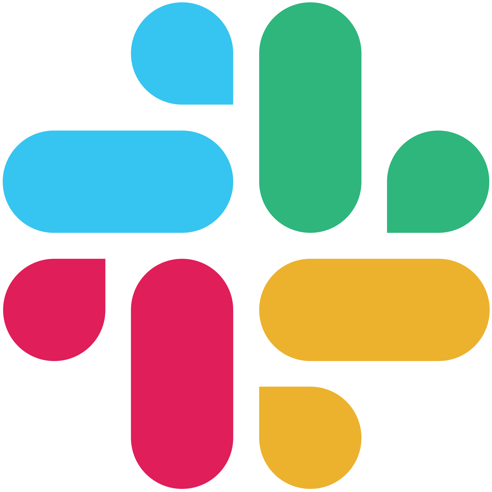
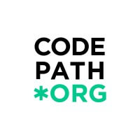

Google
Software Engineer Intern | Fall 2022
- Contribute to unit testing framework Robolectric as part of the Android Test Framework and Infrastructure Team
- Reduce invokedynamic overhead in Robolectric tests by 85% using Java 17 and ASM 9.4
- Decreased total Robolectric test runtime by 7.5% (saves ~1 years worth of cloud computation time per day)

Slack
Slack
Software Engineer Intern | Summer 2022
- Work within the Mobile Adoption Android team to increase number of workspace invites and boost Slack adoption
- Implement settings menu for toggling Slack Connect discoverability using Kotlin 1.7, Mockito 4.6, Robolectric 4.8
- Revamp Slack workspace shared invites from a one-per-workspace model to a one-per-person model
Intuit
Software Engineer Co-op | Winter + Spring 2022
- Work within the Android AppFabric team to provide reusable components and services to all Intuit mobile apps
- Implement an Update Warning widget using Kotlin 1.4.3, MockK 1.10.0, and JUnit4 1.6.6
- Created Loading Indicator, Checkbox, and Banner UI Components using Jetpack Compose 1.1.1
Dropbox
Software Engineer Intern (LAUNCH) | Summer 2021
- Rewrote Dropbox App’s Starring data layer using Android 11, Kotlin 1.4.3, RxJava2, JUnit 4, and Espresso
- Integrated Dropbox API, SQLite using Room, Kotlin coroutines and flows, and Dagger dependency injection
- Pushed multiple Hyperion DevTool Plugins into production during company hackathon, awarded 1250$ spot bonus
Mathworks
Software Engineer Intern | Fall 2021
- Implemented a website that bundles MathWorks Web Widgets using Express.js, Node.js, Jest, and Webpack
- Increased web widget rendering performance by 92.84% using Webpack Bundles
- Utilized GitLab persistent volume and SHA hashing to create caching system to eliminate unnecessary computation
UC San Diego
Computer Science Tutor | Winter + Spring 2021
- Host 6 hours of office hours weekly to help guide students for their weekly programming assignment
- Answered 400+ course-related questions on Piazza, the question answering platform for the class
- Supervise classroom lab assignment in Linux OS, Vim, Bash Shell Scripting, and Version Control (Git)

CodePath
CodePath
Technical Interview Mentor | Summer 2022
- Mentored 6 CodePath students on techniques for software engineer interviews
- Lead weekly meetings to go over LeetCode style interview problems and solutions
- Provided general interviewing advice for both behavioral and technical interviews
CodePath
Android Teaching Assistant | Winter 2021
- Resolve and troubleshoot all technical Android/Android Studios/emulator problems for over 470 participants in Codepath’s Advanced Android Course
CodePath
Android Tech Fellow | Winter + Spring 2022
- Lecture once a week about Android Programming to a classroom of 20 UCSD Students. I help students with questions, manage class logistics, and prepare lecture slides.